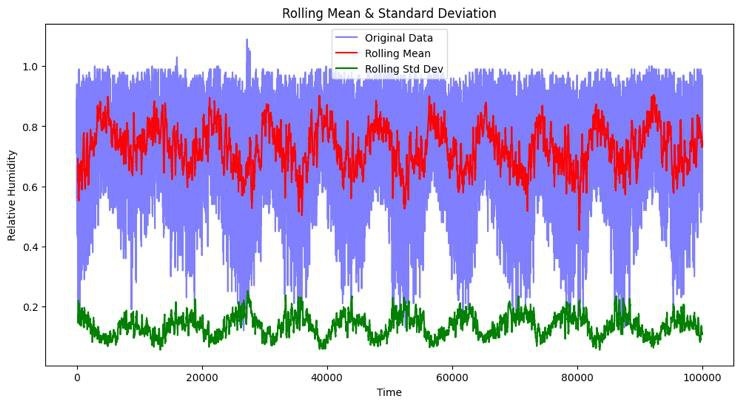
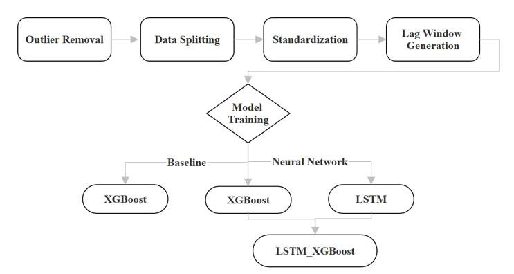

Weather Humidity Forecasting
Forecasting relative humidity 1, 6 and 24 hours ahead with Random Forest, XGBoost, LSTM and a hybrid LSTM-XGBoost model.
- My role
- Built the forecasting models; wrote the Pandas preprocessing pipeline and the stationarity and correlation analysis
- Team
- Team of 4 (IT1244, NUS)
- When
- Mar – May 2025

Overview
Relative humidity matters for weather forecasting, public health and environmental monitoring, but it's hard to predict because weather variables interact in complex, non-linear ways. Using 100,057 hourly observations from 2010 to 2021, we built and compared four machine learning models to forecast humidity 1, 6 and 24 hours ahead, without using current humidity as an input.
What I did
- Explored the data first: correlation matrix, ACF and PACF plots, ADF and KPSS stationarity tests, and rolling statistics, which revealed strong 24-hour seasonality.
- Wrote the preprocessing pipeline in Pandas: removed physically impossible readings, standardised features and built 1-, 6- and 24-hour lag windows without leaking the target.
- Built a Random Forest baseline, then XGBoost with seasonal, lag, difference and interaction features, validated with time-series cross-validation.
- Built LSTM models in Keras and tuned units, dropout, learning rate, batch size and epochs separately for each horizon using Bayesian optimisation (Optuna).
- Built a hybrid model that feeds features learned by the LSTM into a tuned XGBoost model.
Results
- XGBoost was the best model at every horizon: MAE 0.046 (1h), 0.064 (6h) and 0.080 (24h)
- Errors are comparable to the 5–10% typical of human forecasters
- Showed the hybrid LSTM-XGBoost didn't beat its parts, and explained why
Gallery
